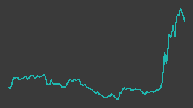

弁護士ドットコム（6027）
東証プライム／レポート更新 2026-09-04
記述の裏取り 30/48件が裏付けあり／18件は未確認・要修正（検証 2026-08-31）
IR情報 ↗会社サイト ↗株探 ↗IR BANK ↗

画像判定※・6か月・基準日 2026-09-03一行でいうと：法律相談ポータル「弁護士ドットコム」と電子契約「クラウドサイン」を運営し、法務AI「LegalBrain」と、2026年に買収した弁護士保険・弁護士費用サービスへ手を広げている会社。2026年4〜6月期は売上高4,838百万円✓・営業利益698百万円✓でいずれも四半期の過去最高。ただし株価は8月の3週間で2.2倍になっており、上げの材料には決算のほかに米国のAI誤引用問題という業績と直結しない話題が混じっている。
週次アップデート最新 2026-W36・全 2 件
新しい週を上に置いている。過去の記述は書き換えず、そのまま残している。
2026-W36（続報）
反落。大量保有報告書・自社株買い状況・新サービスの発表が重なった週
- 株価: 週間 -4.1%（5110→4900円・採用終値ベース、照合成立 4日、週内 4900〜5360円）
- 出来高: 前週比 -19.7%（今週 2,402,600株／前週 2,991,400株）※／信用倍率: 1.37倍（買残 487.4千株・売残 355千株、08/28時点）※
- 判定: 「様子見(過熱)」／開示: なし
- ニュース: 09/03 弁護士ＣＯＭについて、ＪＰモルガン・アセットは保有割合が5％を超えたと報告 [大量保有報告書] 株探 ↗
- ニュース: 09/01 自己株式の取得状況に関するお知らせ（会社法第459条第１項の規定による定款の定めに基づく自己株式の取得） 株探 ↗
- ニュース: 08/31 クラウドサインシリーズ、「クラウドサイン 書類管理」を提供開始 株探 ↗
（解釈）9/3付でJPモルガン・アセットの保有割合が5%を超えたとする大量保有報告書が報じられた 9/1付で自己株式の取得状況に関するお知らせ、8/31付でクラウドサイン新サービス（書類管理）の提供開始が発表されており、材料は多かったが株価は下げた
次週に見ること: ① 過熱感（25日乖離・信用倍率）の解消を確認する
2026-W36（2026-08-31 週）
（初回レポート。8/12の1Q決算を起点に、米国のAI誤引用問題と証券会社の新規強気推奨が重なり、採用終値は8/7の2,388円✓から8/27の5,140円✓へ+115.2%✓）
- スクリーニング起点で 2026-08-30 に登録した銘柄のため、今週が最初のエントリになる。以下は 2026-08-28 までに取れているデータと開示に基づく
- 8/12の大引け後（15:30）に2027年3月期第1四半期（4〜6月）決算を開示（一次情報・TDnet、取得日 2026-08-31）。売上高4,838百万円✓、営業利益698百万円✓、経常利益697百万円✓。会社は前年同期比で売上+27.3%※・営業利益+36.8%※とし、通期計画（売上高20,500百万円✓・営業利益3,000百万円✓）は据え置いた。株探 ↗
- 8/13は+18.9%✓の3,150円✓（終値＝当日高値）、8/14も+19.0%✓の3,750円✓。株探は「クラウドサイン事業が牽引し４～６月営業益３７％増」と報じた（二次情報、取得日 2026-08-31）。株探 ↗
- 8/19は+18.2%✓の4,420円✓、出来高1,343,700株※。株探は、好決算に加えて米国で「AI弁護士」によるハルシネーション（情報の捏造）問題が取り沙汰されていることが上昇を加速させたとし、ネット証券アナリストの「同社の法務AIは独自データベースが土台なので相対的優位性がクローズアップされうる」という見方を伝えている（二次情報、取得日 2026-08-31）。これは同社の売上・利益に直接ひもづく材料ではない。 株探 ↗
- 8/21の大引け後に、2026年4月にグループ化したミカタ少額短期保険と代理店委託契約を結び、弁護士保険の取り扱いを8月から開始すると開示（一次情報・TDnet、取得日 2026-08-31）。株探 ↗
- 8/25に大和証券が投資判断「2」・目標株価5,700円※で新規にカバレッジを開始（二次情報、取得日 2026-08-31）。翌8/26は+16.2%✓の5,050円✓（終値＝当日高値）、8/27は5,140円✓で52週高値を更新した。株探 ↗
- 8/28は照合が成立せず、採用終値は空のまま（取得できたのは1ソースのみ）。参考値は5,110円※、出来高553,000株※
- 信用買い残は 8/14 486.3千株※ → 8/21 503.4千株※へ増え、売り残は406.5千株※ → 362.3千株※へ減った。信用倍率1.39倍※。株探 ↗
次週に見ること：①9月上旬に出る8月分の自己株式取得状況の開示（7月の取得は0株※。株価が2倍になった後も買うのか） ②2Q（7〜9月）決算の発表予定日の告知（前期の2Q発表は2025-11-12※） ③米国のAI誤引用問題という材料が剥落したときに、決算だけで説明できる水準（8/12終値2,650円✓）からどれだけ上に残るか
次期売上・利益推定対象 FY2027-03・作成済み・変数 5 個
作成済み 対象期 FY2027-03・起案 2026-09-05。検証済みデータと明示した仮定から機械計算した概算であり、会社計画でも的中予想でもない。推定 の付いた変数を疑うための頁。
会社計画・市場予想・実績との比較（百万円）
| 指標 | 前期実績 | 会社計画 | 市場予想 | 当台帳推定 | 市場予想比 |
|---|---|---|---|---|---|
| 売上 | 16,288 | 20,500 | 20,751 | 20,324 | -2.1% |
| 営業利益 | 2,204 | 3,000 | — | 2,947 | — |
市場予想の出所: みんかぶ 証券アナリスト予想（3人: 強気買い1・買い1・中立1） 出典 ↗
計算の分解
| セグメント | 式（値を代入） | 売上（百万円） |
|---|---|---|
| プロフェッショナル支援（弁護士・税理士ポータル、判例DB、保険） | 2,329 × 4.15 = 9,665.35 | 9,665 |
| クラウドサイン（電子契約） | 2,508 × 4.25 = 10,659 | 10,659 |
変数と根拠
カードを押すと、その値の置き方（メモ・出典）が開く。推定 の変数から疑うこと。
プロフェッショナル支援（弁護士・税理士ポータル、判例DB、保険）q1_revenue2329開示（一次）
プロフェッショナル支援（弁護士・税理士ポータル、判例DB、保険）annualize4.15推定
クラウドサイン（電子契約）q1_revenue2508開示（一次）
クラウドサイン（電子契約）annualize4.25推定
全社op_margin0.145推定
感度 — この推定を最も動かす変数
各変数を +10% したときの営業利益の変化。上にある変数ほど、根拠を厚く確かめる価値がある。ただし op_margin だけは別扱い——営業利益 = 売上合計 × op_margin なので +10% は定義上つねに +10% になり、売上側の変数と大小を比べても意味が無い。
| 変数 | セグメント | 営業利益への影響 |
|---|---|---|
op_margin | 全社 定義上 | +10.0% 乗法モデルなので定義上つねに +10%。売上側の変数との大小比較には意味が無い（率の水準そのものを疑うこと） |
annualize | クラウドサイン（電子契約） | +5.2% |
q1_revenue | クラウドサイン（電子契約） | +5.2% |
annualize | プロフェッショナル支援（弁護士・税理士ポータル、判例DB、保険） | +4.8% |
q1_revenue | プロフェッショナル支援（弁護士・税理士ポータル、判例DB、保険） | +4.8% |
推定の変遷
過去の版は書き換えずに残す。数値感がどう変わってきたかが学習の履歴になる。
| 起案日 | 対象期 | 売上 | 営業利益 | 何を変えたか |
|---|---|---|---|---|
| 2026-09-05 | FY2027-03 | 20,324 | 2,947 | 初版（Claude 起案・人間未確認）。報告セグメント2つ（プロフェッショナル支援・クラウドサイン）それぞれを1Q売上×年率換算係数で置く。 会社計画は売上高 20,500・営業利益 3,000 百万円（fundamentals の採用値。前期比 +25.9%・+36.1%）。1Qのセグメント売上は決算短信の 一次情報（未照合・reports/6027.md では※）。推定は売上・営業利益とも会社計画とほぼ同じ |
会社概要この会社は何者か・財務の推移と健全性・今後の展望とリスク・値動きと市場の評価・出典・検証の記録
この会社は何者か
弁護士と相談者をつなぐポータルで始まり、いまは電子契約「クラウドサイン」が売上の半分を稼ぐ会社。 会社は“「プロフェッショナル・テック」で、次の常識をつくる。”をミッションに掲げ、報告セグメントをプロフェッショナル支援事業とクラウドサイン事業の2つに置いている（この区分は2026年3月期2Qから。それ以前は「メディア事業」「IT・ソリューション事業」だった。一次情報・出典節）。
定性図（数値を含まない）
プロフェッショナル支援事業には、法律相談ポータル「弁護士ドットコム」、税務相談の「税理士ドットコム」、企業法務の「ビジネスロイヤーズ」に加え、判例データベース「判例秘書」、訴訟支援ツール「弁護革命」、法務AIエージェント「LegalBrain エージェント」が入る。2026年4〜6月期のセグメント売上は2,329百万円※、セグメント利益は521百万円※で、会社は前年同期比+30.9%※・+12.7%※としている（一次情報・決算短信）。同期末の会員登録弁護士数は30,501人※（前年同月比+3.6%※）、うち有料会員登録弁護士は14,860人※（同+1.4%※）。
クラウドサイン事業は契約マネジメントプラットフォーム1本で、同四半期のセグメント売上2,508百万円※、セグメント利益949百万円※（会社開示で前年同期比+24.0%※・+45.8%※）。契約送信件数は3,230,608件※（同+15.7%※）で、会社は「コロナ禍を上回る過去最高の新規獲得件数」と説明している。連結の営業利益698百万円✓に対しセグメント利益の合計は1,471百万円※で、差額は各セグメントに配分していない全社費用772百万円※である（一次情報・決算短信）。
2026年に入って買収が3件あり、いずれも当期から連結に入っている（一次情報・決算短信）。
- ミカタ少額短期保険（2026年4月27日に議決権53%※を取得、取得原価2,788百万円※）。2013年に日本初の単独型弁護士保険を出した業界最大手だと会社は説明している。のれん2,460百万円※が発生し、14年の均等償却※
- 日本リーガルネットワークとATE（2026年4月2日に100%※取得、取得原価730百万円※）。トラブル発生後でも契約できる弁護士費用提供サービス。みなし取得日が2026年6月30日のため当四半期は貸借対照表のみ連結され、損益には入っていない。のれん596百万円※（暫定）。両社は2026年8月1日に合併し「弁護士ドットコムリーガルファイナンス」になった
つまりこの会社は、相談の「前」（保険）と「後」（弁護士費用の立替）を買って、ポータルの前後に事業を足したところである。8月に始めた弁護士保険の取り扱いは、その最初の接続にあたる。
なお、data/master.yaml ではこの銘柄の valuation_model / fiscal_year_end / ir_url / peers が TO_VERIFY のまま置かれている。決算期が3月であることは決算短信で確認できるが、マスタの更新は本レポートの担当外なので未確認として残す。
財務の推移と健全性
売上は毎期二桁で伸び、2026年3月期に営業利益が一段跳ねた。 直近の四半期は増益率が増収率を上回っている。
表の数値はすべて2ソース照合済みの採用値。空欄は採用値が無いことを示す（推定で埋めていない）。2023年3月期は単体、2024年3月期以降は連結。
| 決算期 | 売上高（百万円） | 営業利益（百万円） | 経常利益（百万円） | 最終利益（百万円） | 自己資本比率（％） |
|---|---|---|---|---|---|
| 2023年3月期 | 8,710 | 1,090 | 1,103 | 717 | |
| 2024年3月期 | 11,323 | 1,236 | 1,315 | 837 | 40.3 |
| 2025年3月期 | 14,072 | 1,389 | 1,405 | 1,049 | 47.6 |
| 2026年3月期 | 16,288 | 2,204 | 2,197 | 1,510 | 53.2 |
| 2027年3月期 会社計画 | 20,500 | 3,000 | 2,000 |
出所: data/fundamentals/6027.csv の採用値（別サイト2つ以上が一致した値だけ）。6/6点を採用。
売上は2022年3月期の68.8億円✓から2026年3月期の162.9億円✓へ、4年で2.4倍になった。利益の伸び方はこれを上回り、2026年3月期の営業利益は22.0億円✓（前期比+58.7%✓）、営業利益率13.53%✓。1株利益は66.68円✓、1株純資産は311.18円✓である。
出所: data/fundamentals/6027.csv の採用値（別サイト2つ以上が一致した値だけ）。8/8点を採用。
四半期で見ると、営業利益は2024年10〜12月期の214百万円✓を底に、2026年4〜6月期は698百万円✓まで来た。営業利益の実額はこれが四半期として過去最高で、次点は630百万円✓。ただし同四半期の営業利益率 14.43%✓ は過去最高ではなく、2025年1〜3月期の16.62%✓に及ばない。会社は通期営業利益計画3,000百万円✓に対する進捗率を23.3%※、売上の進捗率を23.6%※としている。
ただし直近の増収の3分の1は買収によるものである。 決算説明資料のサービス別売上（会社開示の図から読み取り・未照合）では、2026年4〜6月期の「弁護士ドットコム」の売上1,565百万円※のうち351百万円※が新設された「リーガルファイナンスサービス」で、これはミカタ少額短期保険の連結によるものと読める。残る3サービス（集客・業務支援947百万円※、有料会員131百万円※、キャリア等136百万円※）の合計は前年同期の1,213百万円※とほぼ同じで、買収分を除いた「弁護士ドットコム」の売上はこの1年ほぼ横ばいという計算になる。とりわけ有料会員サービスは150百万円※→131百万円※と減り続けている。連結売上の前年同期比+27.3%※のうち、ミカタ由来と見られる351百万円※は増収額1,036百万円✓の約3分の1にあたる。
財政状態は1四半期で大きく動いた。2026年6月末の総資産は16,573百万円※（2026年3月末は13,381百万円✓）、自己資本比率は44.2%※（同53.2%✓）。増えたのはのれんで、804百万円※から3,798百万円※へ。買収の原資は主に借入で、長期借入金が2,086百万円※、1年内返済予定分が390百万円※増え、現金及び預金は5,199百万円✓から4,193百万円※へ減った。支払利息は前年同期の5百万円※から14百万円※になっている（いずれも一次情報・決算短信。取得元1件のため照合は通っていない）。
キャッシュフローは2026年3月期で営業CF 16.2億円✓、投資CF -10.4億円✓、フリーCF 5.8億円✓、財務CF 4.5億円✓。期末の現金同等物は52.0億円✓だった。配当は無配で、2027年3月期の予想も0円である（一次情報・決算短信）。
株主還元は自社株買いで行っている。2026年6月11日の取締役会で350,000株※（自己株式を除く発行済株式総数の1.5%※）・5.0億円※を上限とする取得を決議し、期間は2026年6月12日〜11月30日※。7月末時点の累計取得は82,900株※・176百万円※で、7月中の取得は0株※だった（一次情報・出典節）。取得済み分の平均単価は約2,132円※で、8月末の株価水準とは大きく離れている。
今後の展望とリスク
会社計画は8月12日時点で据え置かれている。 2027年3月期は売上高20,500百万円✓（前期比+25.9%※）、EBITDA 4,300百万円※（同+35.0%※）、営業利益3,000百万円✓（同+36.1%※）、当期純利益2,000百万円✓（同+32.5%※）、1株利益87.78円✓。1Qは会社自身が「主要数値が全ての計画から上振れて着地」としているが、修正はしていない。
会社が挙げる成長の柱は3つある（いずれも一次情報・決算説明資料）。
- LegalBrain エージェント：法令・判例・ガイドライン・法律専門書籍を統合した法務AIエージェント。会社は2026年7月のARRが同年3月比3.8倍※、6月のアップグレード後価格を適用すると同3月比11倍※になると説明し、「クラウドサインの30倍超の成長スピード」だとしている。2025年度司法試験予備試験の論文式について、伊藤塾の採点で500点満点中375点※を獲得したと発表した（会社は「法務省が公表する公式な成績や順位を示すものではない」と注記している）
- クラウドサイン：2026年4月に価格改定（値上げ）を実施し、1社あたりの平均契約送信単価が上がったとしている。2026年8月29日から書類管理プロダクトを提供開始し、既存ユーザーへのアップセルを狙う
- 買収した保険・リーガルファイナンス：8月から弁護士保険の取り扱いを開始。会社は自社プラットフォームに国内弁護士の67%以上※が登録していることを販路の強みとして挙げている
制度面では追い風がある。会社は、2026年7月21日に閣議決定された日本成長戦略・官民投資ロードマップで「バーティカルAI（領域特化型AI）」の官民投資促進が明記され、弁護士業務におけるAI活用の促進が具体例として記載されたとしている。また、AIリーガルテックと弁護士法72条の関係について、規制改革推進会議の中間答申（2026年2月26日※）を受けて法務省に令和8年度上期の結論が求められている、とも整理している（会社の説明・未照合）。
リスクとして見えているものを、確度の高い順に置く。
- 増収の質。 上に書いたとおり、直近1年の増収のうち約3分の1はミカタ少額短期保険の連結による。プロフェッショナル支援事業はセグメント売上が+30.9%※伸びた一方でセグメント利益は+12.7%※にとどまっており、買収した事業の利益率は既存事業より低いと読める。買収を除いた既存事業の伸びが、来期以降も同じ増収率を出せるかは分からない
- のれんと借入。 のれんは3,798百万円※まで増え、純資産7,615百万円※の半分に相当する。ミカタ分だけで年176百万円※（2,460百万円※を14年で均等償却）の償却が営業利益から出る。1Qののれん償却額は62百万円※で前年同期の18百万円※から増えた。買収先の業績が想定を下回れば減損の対象になる。自己資本比率も53.2%✓から44.2%※へ下がった
- 株価に織り込まれた期待。 株探の2026年8月31日ザラ場時点の表示でPER 62.2倍※。会社計画の1株利益87.78円✓と8月27日の採用終値5,140円✓で計算しても58.6倍※で、計画どおり36%増益しても倍率は高い水準にとどまる
- 上昇の一部が業績と無関係であること。 8月19日の急伸は米国のAI誤引用問題という他国の話題を材料にしたものだと報じられている。この種の材料は業績に何も足さないので、剥落したときに株価だけが戻る可能性がある
- 規制の向き。 弁護士法72条とAIリーガルテックの関係は現在も検討中で、緩和されれば追い風、線引きが厳しくなれば逆風になる。どちらに転ぶかを当てにした判断はできない
- 非支配株主持分。 ミカタは53%※取得で完全子会社ではない。1Qは非支配株主に帰属する四半期純利益が4百万円※出ている。利益が伸びるほど、この控除も増える
- 決算発表の日程が未確認。 2Q（7〜9月）決算の発表予定日を確認できていない。前期の2Q発表は2025年11月12日※（二次情報）
値動きと市場の評価
6月末に52週安値を付けたあと、8月の3週間で2.2倍になった。
出所: data/prices/daily.csv の採用終値（2つの取得元が一致した終値だけ）。ザラ場の高値・安値は照合を通っていないので使っていない。3/3点を採用、52週の採用終値 242営業日。安値 2026-06-25 / 高値 2026-08-31 / 現在 2026-09-03。
出所: data/prices/daily.csv の採用終値（2つの取得元が一致した終値だけ）。ザラ場の高値・安値は照合を通っていないので使っていない。247/247点を採用、52週の採用終値 242営業日、出来事 5/5件を配置。
採用終値で見た直近52週のレンジは、安値が2026年6月25日の2,009円✓、高値が2026年8月27日の5,140円✓。高値は最新の採用終値そのものであり、レンジの上端に張り付いた状態にある。安値からの上昇率は+155.8%✓。ただし、この52週は前半と後半でまったく別の相場だった。2025年9月8日の3,750円✓から2026年6月25日の2,009円✓まで9か月かけて-46.4%✓下げたあと、8月の3週間で戻し切って上抜けている。
主な節目と、そのときの値動きは以下のとおり。
- 2026年5月13日：前期決算と今期計画を公表。当日終値2,738円✓（前日比+2.5%✓）、翌14日2,751円✓と小動きで、そこから6月末にかけて下げた
- 2026年6月11日：自社株買いを決議（16:30）。翌12日の終値は2,106円✓で前日比-0.1%✓。買い戻しの決議は株価を動かしていない
- 2026年6月22日：LegalBrain エージェントのアップグレードと司法試験予備試験の結果を開示（16:30）。翌23日は2,087円✓（-5.0%✓）、25日には52週安値2,009円✓を付けた。同じ「法務AIの強み」という話が、6月には売られ8月には買われていると読める
- 2026年8月12日：1Q決算を大引け後に開示。当日は+9.2%✓の2,650円✓と決算前に上げ、翌13日+18.9%✓、14日+19.0%✓と続いた
- 2026年8月19日：+18.2%✓の4,420円✓。出来高1,343,700株※は、8月7日までの直近60営業日の平均（約90,100株※）の約15倍
- 2026年8月26日：大和証券の新規カバレッジを受けて+16.2%✓の5,050円✓（終値＝当日高値）
市場が付けている倍率は、株探の2026年8月31日ザラ場時点（15分ディレイ）の表示でPER 62.2倍※、PBR 16.99倍※、時価総額1,249億円※、発行済株式数22,867,600株※。発行済株式数は決算短信の2026年6月末の数字と一致する（一次情報・出典節）。目標株価は大和証券が5,700円※（2026年8月25日、二次情報）で、8月27日の採用終値5,140円✓との差は約11%※しかない。
需給面では、信用買い残が2026年8月21日時点で503.4千株※、売り残が362.3千株※、信用倍率1.39倍※。買い残は発行済株式数の約2.2%※にあたる。貸借銘柄で売り建てもできるため、上昇局面でも売り残が積み上がっている。8月20日には「みんかぶ・個人投資家の予想から」で売り予想数上昇の1位に挙げられた（二次情報）。
この銘柄の8月の値動きは、決算という検証できる材料と、米国のAI誤引用問題という検証できない材料が重なって起きている。8月12日の終値2,650円✓が決算前の水準で、そこから8月27日の5,140円✓までの上げ幅は決算の中身だけでは説明しきれない。判断の材料としては、四半期の営業利益が積み上がり続けるか、買収分を除いた既存事業の売上が再び伸びるか、のほうが重い。
出典
凡例: ✓=2ソース照合済みの採用値 ／ ※=未照合・参考値 ／ †=決算短信（一次情報）から直接
一次情報（会社開示・TDnet）
配信元は株探が置いているTDnetのミラーで、PDF自体は会社が提出した開示書類である。
| 資料 | 日付 | URL |
|---|---|---|
| 2027年3月期 第1四半期決算短信〔日本基準〕（連結） | 2026-08-12 | 株探 ↗ |
| 2027年3月期 第1四半期 決算説明資料 | 2026-08-12 | 株探 ↗ |
| 弁護士ドットコム、ミカタ少額短期保険株式会社と代理店委託契約を締結 | 2026-08-21 | 株探 ↗ |
| 自己株式の取得状況に関するお知らせ | 2026-08-03 | 株探 ↗ |
| 自己株式取得に係る事項の決定に関するお知らせ ならびに、代表取締役社長個人による役員持株会を通じた株式の継続取得について | 2026-06-11 | 株探 ↗ |
| IRサイト | — | bengo4.com ↗ |
いずれも取得日 2026-08-31。
二次情報
| 媒体 | 使った内容 | URL |
|---|---|---|
| 株探 | PER・PBR・時価総額・発行済株式数・信用残・業績推移 | 株探 ↗ |
| 株探（決算） | 通期・四半期の業績推移と発表日 | 株探 ↗ |
| 株探（ニュース） | 6〜8月の材料記事と開示の一覧 | 株探 ↗ |
| IR BANK | 財務数値の照合先（data/fundamentals/6027.csv の副ソース） |
IR BANK ↗ |
いずれも取得日 2026-08-31。
この台帳の中の出所
- 株価・出来高：
data/prices/daily.csv（採用終値は2ソース照合済み。2025-07-22〜2026-08-28 のうち採用終値は241/270日） - 財務数値：
data/fundamentals/6027.csv - 信用残：
data/margin/6027.csv
未確認（この時点で確かめられていないこと）
- 2Q（2026年7〜9月）決算の発表予定日。 IRカレンダーに到達できておらず、前期実績（2025-11-12・二次情報）からの推測しかできていない
- 8月分の自己株式取得の実績。 7月分までの開示しか出ていない
- 決算説明資料のサービス別売上とARRは、資料中のグラフのラベルから読み取ったもの。 会社開示の単一ソースで、照合は通っていない。「買収分を除くと横ばい」という本文の計算はこの読み取りに依存している
- 大和証券のレポート本体は未取得。 投資判断・目標株価は株探の要約による
- ROE・ROA は取得元間で値が割れている（MISMATCH） ため、この台帳では採用していない
- 2026年6月末の残高（総資産・自己資本比率・のれん・借入金）は取得元1件のみで照合が成立していない。 本文では決算短信の値を参考値として ※ 付きで扱っている
data/master.yamlのvaluation_model/fiscal_year_end/ir_url/peersがTO_VERIFYのまま。 本レポートの担当外- 裏取り記録（
data/verification/6027.yaml）がまだ無い。 本レポートの記述は別コンテキストでの検証を通していない
記述の裏取り
本文の記述を、書いたのとは別の文脈が出典URLを取り直して1件ずつ判定した結果（読み方）。
検証日 2026-08-31検証した記述 48裏付けあり 30取得日から値が動いた 1この出典では確かめられない（別の出典が要る） 7出典と食い違う 2確かめられない（到達不可・出典なし） 8再取得した出典 14
裏が取れなかった記述
出典を取り直しても確かめられなかったもの。本文に残っているが、確認済みとして読んではいけない。
| 判定 | 本文の記述 | 再取得して分かったこと | 出典 | どうするか |
|---|---|---|---|---|
| 確かめられない（到達不可・出典なし） | 9月上旬に出る8月分の自己株式取得状況の開示（7月の取得は0株※。株価が2倍になった後も買うのか） | 根拠となる「自己株式の取得状況に関するお知らせ」(2026-08-03) は PDF。fetch_source.py は到達（HTTP 200）できるがテキスト化しない旨を返すだけで、data/tanshin/6027.csv も存在しないため 7月の取得株数を確認できない。https://irbank.net/6027 の IR情報欄にも自己株式取得の行は出ていない。 | 一次情報 — | src/fetch_tanshin.py 等で PDF の機械抽出を data/ に残すか、取得状況を数値で確認できる HTML 出典を足す |
| この出典では確かめられない（別の出典が要る） | 会社は“「プロフェッショナル・テック」で、次の常識をつくる。”をミッションに掲げ | 再取得（200）https://www.bengo4.com/corporate/ を全文取得（5,485字）。「常識」は「最新のテクノロジー×リーガルデータで、次の常識をつくります。」（LegalBrain の紹介文）でのみヒットし、「プロフェッショナル・テック」という語は無い（近い文字列は「一般社団法人日本プロフェッショナルテック協会」「Professional Tech 総合研究所」）。https://www.bengo4.com/corporate/ir/ は目次のみ。 | 一次情報 出典 ↗ 出典 ↗ | ミッション文の出典URL（会社サイトの該当ページ）を足すか、この引用を落とす |
| この出典では確かめられない（別の出典が要る） | 報告セグメントをプロフェッショナル支援事業とクラウドサイン事業の2つに置いている | 決算短信 PDF はテキスト化できず、data/tanshin/6027.csv も無い。再取得できた二次情報（株探ニュース 2026-08-13）はこのセグメントを「プロフェッショナルサービス支援事業」と表記している（本文は「プロフェッショナル支援事業」）。会社サイトにセグメント名の記載は無い。どちらが報告セグメントの正式名称かをこの文脈では確定できない。 | 二次情報 出典 ↗ 出典 ↗ | 決算短信の機械抽出（data/tanshin/6027.csv）でセグメント名を確定する |
| この出典では確かめられない（別の出典が要る） | 連結の営業利益698百万円✓に対しセグメント利益の合計は1,471百万円※で、差額は各セグメントに配分していない全社費用772百万円※である | 決算短信 PDF は到達（200）できるがテキスト化されず、data/tanshin/6027.csv も無いためセグメント利益を出典で確かめられない。加えて本文が挙げるセグメント利益（521百万円※・949百万円※）の和は 521+949=1,470 で、本文の1,471と一致しない。採用値 698（data/fundamentals/6027.csv Q2026-04_2026-06 operating_income, status=OK）を使うと 1,471-772=699≠698 で、本文内の3つの数字が閉じない。 | 一次情報 出典 ↗ data/fundamentals/6027.csv | 決算短信の実額でセグメント利益合計（1,470 か 1,471 か）と全社費用を確定する |
| この出典では確かめられない（別の出典が要る） | 同期末の会員登録弁護士数は30,501人※（前年同月比+3.6%※）、うち有料会員登録弁護士は14,860人※（同+1.4%※） | 再取得（200）会社サイトは「無料法律相談まで登録弁護士32,000人以上。」「Updated On - 2026.08」と表示しており、30,501人／14,860人という数字は無い（定義も期日も本文と異なる可能性がある）。出所とされる決算説明資料は PDF でテキスト化できない。 | 一次情報 出典 ↗ | 会員登録弁護士数の定義（会社サイトの「登録弁護士」との違い）と時点を出典で明示する |
| 確かめられない（到達不可・出典なし） | ミカタ少額短期保険（2026年4月27日に議決権53%※を取得、取得原価2,788百万円※） | 取得原価・議決権比率の出所は決算短信（PDF）。fetch_source.py は HTTP 200 を返すがPDF をテキスト化せず、data/tanshin/6027.csv も無いため確認できない。再取得できた会社サイト・株探・IR BANK にこれらの数値は載っていない。 | 一次情報 — | 決算短信の機械抽出を data/tanshin/6027.csv に残す |
| 確かめられない（到達不可・出典なし） | なお、data/master.yaml ではこの銘柄の valuation_model / fiscal_year_end / ir_url / peers が TO_VERIFY のまま置かれている | SKILL.md §隔離 により data/master.yaml は検証コンテキストに渡されない（D18）。この記述の真偽はこのコンテキストでは確かめられない。確かめないまま supported にしない。 | 出典なし — | master.yaml の点検は checks.py（TO_VERIFY 検査）と人間の側で行う |
| 出典と食い違う | 同四半期の営業利益率は14.43%✓で、いずれも四半期として過去最高である | data/fundamentals/6027.csv の採用値（status に OK を含む operating_margin）は Q2024-07_2024-09 7.76 / Q2024-10_2024-12 5.96 / Q2025-01_2025-03 16.62 / Q2025-04_2025-06 13.43 / Q2025-07_2025-09 14.48 / Q2025-10_2025-12 14.09 / Q2026-01_2026-03 12.27 / Q2026-04_2026-06 14.43。16.62%（2025年1〜3月期）が 14.43% を上回るので、営業利益率は四半期として過去最高ではない。営業利益の実額 698百万円のほうは採用値の最大（次点 630百万円）で正しい。 | 検証済みデータdata/fundamentals/6027.csv | 「いずれも」を営業利益（実額）だけに限るか、利益率について「過去最高」を落とす |
| 確かめられない（到達不可・出典なし） | 決算説明資料のサービス別売上（会社開示の図から読み取り・未照合）では、2026年4〜6月期の「弁護士ドットコム」の売上1,565百万円※ | 出所は決算説明資料（PDF・2026-08-12）。fetch_source.py は HTTP 200 を返すが「PDF。この道具はテキスト化しない」と返すのみで、data/tanshin/6027.csv も無い。本文が挙げる内訳（351+947+131+136=1,565）は内部では閉じているが、外部の出典では確かめられない。 | 一次情報 — | 図の読み取りに依存する記述は、数値を機械抽出で残すか「読み取り値」と明示したまま据え置く |
| この出典では確かめられない（別の出典が要る） | 2026年6月末の総資産は16,573百万円※（2026年3月末は13,381百万円✓）、自己資本比率は44.2%※（同53.2%✓） | ✓の2つは採用値: FY2026-03 total_assets=13381（OK|ROUNDING）・equity_ratio=53.2（OK）。※の2つは data/fundamentals/6027.csv Q2026-04_2026-06 に total_assets=16573・equity_ratio=44.2 があるが status=SINGLE_SOURCE（source_primary=kabutan_bs のみ）で採用値ではなく、D7 により裏付けには使えない。決算短信 PDF はテキスト化できないため一次でも確かめられない。※の付け方自体は正しい。 | 検証済みデータdata/fundamentals/6027.csv | 6月末残高は照合が成立するまで※のまま置く（記述の修正は不要。裏付けが無いことの明示） |
| 確かめられない（到達不可・出典なし） | 2026年6月11日の取締役会で350,000株※（自己株式を除く発行済株式総数の1.5%※）・5.0億円※を上限とする取得を決議し、期間は2026年6月12日〜11月30日※ | 出所は TDnet PDF（2026-06-11）。到達は HTTP 200 だがテキスト化されず、data/tanshin/6027.csv も無い。https://irbank.net/6027 の IR情報欄・資料表にも自己株式取得の行は出ていないため、株数・金額・期間を確かめられない。 | 一次情報 — | 自己株式取得の決議内容を HTML 出典か機械抽出で裏付ける |
| 出典と食い違う | 当期純利益2,000百万円✓（同+32.4%※） | 再取得（200）株探 finance の通期業績推移「前期比 | +25.9 | +36.1 | － | +32.5 | +31.6 |」（列は 売上高／営業益／経常益／最終益／1株益）。採用値どうしの式でも 2000/1510-1=0.324503 → +32.5%（本文は他の率をすべて四捨五入している: 例 2204/1389-1=58.675→+58.7%、5140/2388-1=115.243→+115.2%、5140/2009-1=155.799→+155.8%）。本文の+32.4%は出典表示とも採用値の計算とも合わない。 | 二次情報 出典 ↗ data/fundamentals/6027.csv | +32.5% に直す |
| 確かめられない（到達不可・出典なし） | 会社は2026年7月のARRが同年3月比3.8倍※、6月のアップグレード後価格を適用すると同3月比11倍※になると説明し、「クラウドサインの30倍超の成長スピード」だとしている | 出所は決算説明資料（PDF・2026-08-12）。到達は HTTP 200 だがテキスト化されず、data/tanshin/6027.csv も無い。再取得できた会社サイト・株探・IR BANK に ARR 倍率の記載は無い。同節の司法試験予備試験375点※も同じ出典で同じく未確認。 | 一次情報 — | ARR の倍率と予備試験の点数は、会社の HTML 発表（プレスリリース）を出典に足す |
| この出典では確かめられない（別の出典が要る） | 2026年8月29日から書類管理プロダクトを提供開始し、既存ユーザーへのアップセルを狙う | 再取得（200）会社サイトの News 欄は「2026.08.31 クラウドサインシリーズ、「クラウドサイン 書類管理」を提供開始（Press Release）」と表示しており、8月29日（土曜）という日付は出てこない。提供開始日を示す出典URLは本文に無い。 | 一次情報 出典 ↗ | 会社の公表日（2026.08.31）に合わせるか、8月29日開始を示すプレスリリースURLを出典に足す |
| 確かめられない（到達不可・出典なし） | 2026年7月21日に閣議決定された日本成長戦略・官民投資ロードマップで「バーティカルAI（領域特化型AI）」の官民投資促進が明記され | 出所は決算説明資料（PDF）。到達は HTTP 200 だがテキスト化されず、data/tanshin/6027.csv も無い。閣議決定文書そのもののURLは本文に無いため（SKILL.md 絶対原則3 により本文に無いURLは叩けない）確かめられない。同節の規制改革推進会議 中間答申（2026年2月26日※）も同様。 | 一次情報 — | 制度面の記述は一次文書（閣議決定・答申）のURLを出典に足す |
| 取得日から値が動いた | 株探の2026年8月31日ザラ場時点（15分ディレイ）の表示でPER 62.2倍※、PBR 16.99倍※、時価総額1,249億円※、発行済株式数22,867,600株※ | 2026-08-31 15:46 に再取得（200）した時点の株探の表示は「PER | PBR | 利回り | 信用倍率 / 61.1 倍 | 16.68 倍 | － ％ | 1.39 倍」「時価総額 | 1,226 億円」「現在値 | 5,360 |（15:30）」。発行済株式数は「22,867,600 株」で本文と一致。PER・PBR・時価総額は同日中に株価が動いた分だけ本文と違う（本文の62.2倍は 87.78円×62.2=5,459円相当、再取得時は 61.1倍＝5,360円）。 | 二次情報 出典 ↗ | 時点依存の数値なので「2026年8月31日◯時時点」と時刻まで添える |
| 確かめられない（到達不可・出典なし） | 8月20日には「みんかぶ・個人投資家の予想から」で売り予想数上昇の1位に挙げられた（二次情報） | この記述に対応する出典URLがレポートに無い（--list が返す14件にみんかぶのURLは無く、SKILL.md 絶対原則3 により本文に無いURLは叩けない）。再取得した株探のニュース一覧（8/22〜8/31分）にも該当記事は出ていない。 | 出典なし — | 出典URLを足すか、この記述を落とす |
| この出典では確かめられない（別の出典が要る） | | IRサイト | — | <https://www.bengo4.com/corporate/ir/> | | 一次情報の表に置かれているが、再取得（200・1,880字）するとグローバルナビゲーションとフッター（IR TOP / IRニュース / IRライブラリー / 株式情報 / 電子公告 / ディスクロージャーポリシー）だけで、本文にあたる開示内容が無い＝目次のみ。本レポートのどの記述もこのURLでは裏付けられない。 | 一次情報 出典 ↗ | 実際に引いたページ（IRライブラリーの該当資料）のURLに差し替える |
裏付けが取れた記述 30件
| 判定 | 本文の記述 | 再取得して分かったこと | 出典 | どうするか |
|---|---|---|---|---|
| 裏付けあり | 採用終値は8/7の2,388円✓から8/27の5,140円✓へ+115.2%✓ | data/prices/daily.csv（code=6027・status に OK を含む行）: 2026-08-07 close=2388.0 / 2026-08-27 close=5140.0。5140/2388-1=1.152429 → +115.2%。 | 検証済みデータdata/prices/daily.csv | — |
| 裏付けあり | 8/12の大引け後（15:30）に2027年3月期第1四半期（4〜6月）決算を開示 | 再取得（200）https://irbank.net/6027 の資料表に「2026/08/12 | 15:30 | 1Q | 2027年3月期第1四半期決算短信〔日本基準〕(連結)」。株探 finance の第1四半期累計決算に 「26.04-06 … 発表日 26/08/12」。開示時刻 15:30 は東証の大引け（15:30）後にあたる。 | 二次情報 出典 ↗ 出典 ↗ | — |
| 裏付けあり | 売上高4,838百万円✓、営業利益698百万円✓、経常利益697百万円✓ | data/fundamentals/6027.csv Q2026-04_2026-06: revenue=4838(status OK|ROUNDING) / operating_income=698(OK) / ordinary_income=697(OK)。いずれも採用値。 | 検証済みデータdata/fundamentals/6027.csv | — |
| 裏付けあり | 会社は前年同期比で売上+27.3%※・営業利益+36.8%※とし、通期計画（売上高20,500百万円✓・営業利益3,000百万円✓）は据え置いた | 再取得（200）株探ニュース 2026年08月13日09時55分:「売上高が４８億３８００万円（前年同期比２７．３％増）、営業利益が６億９８００万円（同３６．８％増）」。通期計画は data/fundamentals/6027.csv FY2027-03 revenue_plan=20500(OK)・operating_income_plan=3000(OK)。株探 finance の修正履歴は 2027.03 が「26/05/13 初 … 20,500 / 3,000 / － / 2,000」1行のみで期中修正の行が無い＝据え置き。 | 二次情報 出典 ↗ 出典 ↗ data/fundamentals/6027.csv | — |
| 裏付けあり | 8/13は+18.9%✓の3,150円✓（終値＝当日高値）、8/14も+19.0%✓の3,750円✓ | data/prices/daily.csv: 2026-08-12 close=2650.0 / 2026-08-13 high=3150.0 close=3150.0 / 2026-08-14 close=3750.0（いずれも status=OK）。3150/2650-1=0.188679 → +18.9%、3750/3150-1=0.190476 → +19.0%。8/13 は high と close が一致。 | 検証済みデータdata/prices/daily.csv | — |
| 裏付けあり | 株探は「クラウドサイン事業が牽引し４～６月営業益３７％増」と報じた | 再取得（200）。記事見出し「弁護士ＣＯＭは大幅高で４連騰、クラウドサイン事業が牽引し４～６月営業益３７％増」が本文中の引用と一致。 | 二次情報 出典 ↗ | — |
| 裏付けあり | 8/19は+18.2%✓の4,420円✓、出来高1,343,700株※ | data/prices/daily.csv: 2026-08-18 close=3740.0 / 2026-08-19 close=4420.0・volume=1343700（status=OK）。4420/3740-1=0.181818 → +18.2%。 | 検証済みデータdata/prices/daily.csv | — |
| 裏付けあり | ネット証券アナリストの「同社の法務AIは独自データベースが土台なので相対的優位性がクローズアップされうる」という見方を伝えている | 再取得（200）2026年08月19日10時45分の記事:「市場では「弁護士ＣＯＭが強みとする『Ｌｅｇａｌ Ｂｒａｉｎ（リーガルブレイン） 』などの法務ＡＩは信頼性の高い独自のデータベースを土台としているため、米国のＡＩ捏造問題を契機に相対的優位性がクローズアップされるケースも想定できる」（ネット証券アナリスト）」。本文は要約だが主張の内容と帰属先が一致する。 | 二次情報 出典 ↗ | — |
| 裏付けあり | 8/21の大引け後に、2026年4月にグループ化したミカタ少額短期保険と代理店委託契約を結び、弁護士保険の取り扱いを8月から開始すると開示 | 再取得（200）会社サイト News:「2026.08.21 弁護士ドットコム、ミカタ少額短期保険株式会社と代理店委託契約を締結（Information）」。https://irbank.net/6027 の IR情報:「2026/08/21 弁護士ドットコム、ミカタ少額短期保険株式会社と代理店委託契約を締結（15:30）」＝大引け後。株探ニュース一覧に「26/08/24 10:02 弁護士ＣＯＭは続伸し年初来高値を連日更新、弁護士保険の取り扱い開始」。取得原価・議決権比率など買収の中身は別 claim（V19）。 | 一次情報 出典 ↗ 出典 ↗ 出典 ↗ | — |
| 裏付けあり | 8/25に大和証券が投資判断「2」・目標株価5,700円※で新規にカバレッジを開始 | 再取得（200）「レーティング日報【新規格付け】 (8月25日)」2026年08月25日17時00分:「弁護士ＣＯＭ <6027> 大和 新規に２ 5700 8/25」。 | 二次情報 出典 ↗ | — |
| 裏付けあり | 8/28は照合が成立せず、採用終値は空のまま（取得できたのは1ソースのみ）。参考値は5,110円※、出来高553,000株※ | data/prices/daily.csv 2026-08-28: status=SINGLE_SOURCE・close 空・source_primary=yahoo_jp・value_primary=5110.0・source_secondary 空・volume=553000。D53 に従い status で数えた。https://irbank.net/6027 も「最新 | 5,110 2026/8/28 | 553,000」と表示。 | 検証済みデータdata/prices/daily.csv | — |
| 裏付けあり | 信用買い残は 8/14 486.3千株※ → 8/21 503.4千株※へ増え、売り残は406.5千株※ → 362.3千株※へ減った。信用倍率1.39倍※ | 再取得（200）株探の信用取引 (単位:千株):「08/21 | 362.3 | 503.4 | 1.39」「08/14 | 406.5 | 486.3 | 1.20」（列は 売り残 | 買い残 | 倍率）。data/margin/6027.csv も 2026-08-14 long=486.3 short=406.5 ratio=1.2 / 2026-08-21 long=503.4 short=362.3 ratio=1.39（status=OK）。 | 二次情報 出典 ↗ data/margin/6027.csv | — |
| 裏付けあり | 前期の2Q発表は2025-11-12※ | 再取得（200）https://irbank.net/6027 の資料表:「2025/11/12 | 15:30 | 2Q | 2026年3月期第2四半期(中間期)決算短信〔日本基準〕(連結)」。株探 finance の上期業績「連 25.04-09 … 発表日 25/11/12」。ただしこれは前期実績であって、今期2Qの発表予定日ではない。 | 二次情報 出典 ↗ 出典 ↗ | — |
| 裏付けあり | | 2026年3月期 | 16,288 | 2,204 | 2,197 | 1,510 | 53.2 | | data/fundamentals/6027.csv FY2026-03: revenue=16288 / operating_income=2204 / ordinary_income=2197 / net_income=1510 / equity_ratio=53.2。いずれも status に OK を含む採用値。同様に FY2023-03(8710/1090/1103/717・自己資本比率は採用値なしで空欄)・FY2024-03(11323/1236/1315/837/40.3)・FY2025-03(14072/1389/1405/1049/47.6)・FY2027-03計画(20500/3000/経常は空/2000) も表と一致。 | 検証済みデータdata/fundamentals/6027.csv | — |
| 裏付けあり | 売上は2022年3月期の68.8億円✓から2026年3月期の162.9億円✓へ、4年で2.4倍になった | FY2022-03 revenue=6877（status OK|ROUNDING|NONCONSOLIDATED）→68.77億、FY2026-03 revenue=16288（OK|ROUNDING）→162.88億。16288/6877=2.368 → 2.4倍。 | 検証済みデータdata/fundamentals/6027.csv | — |
| 裏付けあり | 会社は通期営業利益計画3,000百万円✓に対する進捗率を23.3%※、売上の進捗率を23.6%※としている | 採用値どうしの式: 698/3000=0.23267 → 23.3%、4838/20500=0.23600 → 23.6%（Q2026-04_2026-06 operating_income=698・revenue=4838、FY2027-03 operating_income_plan=3000・revenue_plan=20500、いずれも status OK）。数値は一致する。「会社が示した」という帰属自体は PDF が読めないため未確認。 | 検証済みデータdata/fundamentals/6027.csv | — |
| 裏付けあり | ミカタ由来と見られる351百万円※は増収額1,036百万円✓の約3分の1にあたる | 採用値どうしの式: 4838-3802=1036（Q2026-04_2026-06 revenue=4838・Q2025-04_2025-06 revenue=3802、ともに status OK）。351/1036=0.339 → 約3分の1。351百万円という内訳自体は決算説明資料の読み取りで未照合（本文も※・未確認節に明記）。 | 検証済みデータdata/fundamentals/6027.csv | — |
| 裏付けあり | キャッシュフローは2026年3月期で営業CF 16.2億円✓、投資CF -10.4億円✓、フリーCF 5.8億円✓、財務CF 4.5億円✓。期末の現金同等物は52.0億円✓だった | data/fundamentals/6027.csv FY2026-03: operating_cf=1620(OK) / investing_cf=-1044(OK|ROUNDING) / free_cf=576(OK) / financing_cf=452(OK|ROUNDING) / cash_equivalents=5199(OK|ROUNDING)。億円表示（16.2 / -10.4 / 5.8 / 4.5 / 52.0）と一致。 | 検証済みデータdata/fundamentals/6027.csv | — |
| 裏付けあり | 会社は自社プラットフォームに国内弁護士の67%以上※が登録していることを販路の強みとして挙げている | 再取得（200）会社サイト:「無料法律相談まで登録弁護士32,000人以上。」「国内弁護士の67％」「が登録する、」「日本最大級の弁護士・法律ポータルサイトです。」「※ 国内弁護士におけるシェアは2026年7月1日時点の国内弁護士数から算出」「登録弁護士 国内シェア … 67 % … Updated On - 2026.08」。出典の表記は「67％」で、本文の「以上」は出典に無い。 | 一次情報 出典 ↗ | 「67%以上」→「67%（2026年7月1日時点の国内弁護士数から算出）」にすると出典と一致する |
| 裏付けあり | 採用終値で見た直近52週のレンジは、安値が2026年6月25日の2,009円✓、高値が2026年8月27日の5,140円✓。高値は最新の採用終値そのものであり | data/prices/daily.csv（code=6027・status に OK を含む行、最終行 2026-08-28 から52週=2025-08-29 以降の241行）の close の最小は 2026-06-25 の 2009.0、最大は 2026-08-27 の 5140.0。採用終値のある最終日は 2026-08-27（2026-08-28 は SINGLE_SOURCE で close 空）なので「高値＝最新の採用終値」も成り立つ。 | 検証済みデータdata/prices/daily.csv | — |
| 裏付けあり | 安値からの上昇率は+155.8%✓。ただし、この52週は前半と後半でまったく別の相場だった。2025年9月8日の3,750円✓から2026年6月25日の2,009円✓まで9か月かけて-46.4%✓下げた | 5140/2009-1=1.557989 → +155.8%。2025-09-08 close=3750.0・2026-06-25 close=2009.0（ともに status=OK）。2009/3750-1=-0.464267 → -46.4%。 | 検証済みデータdata/prices/daily.csv | — |
| 裏付けあり | 2026年6月11日：自社株買いを決議（16:30）。翌12日の終値は2,106円✓で前日比-0.1%✓ | data/prices/daily.csv: 2026-06-11 close=2109.0 / 2026-06-12 close=2106.0（status=OK）。2106/2109-1=-0.001422 → -0.1%。開示時刻16:30 は PDF が読めず未確認（V29 と同じ）。 | 検証済みデータdata/prices/daily.csv | — |
| 裏付けあり | 2026年8月19日：+18.2%✓の4,420円✓。出来高1,343,700株※は、8月7日までの直近60営業日の平均（約90,100株※）の約15倍 | 2026-08-07 を末尾とする直近60営業日（2026-05-15〜2026-08-07）の volume 平均=90,058.3株 → 約90,100株。1,343,700/90,058.3=14.92 → 約15倍。 | 検証済みデータdata/prices/daily.csv | — |
| 裏付けあり | 8月27日の採用終値5,140円✓との差は約11%※しかない | 5700/5140-1=0.108949 → 約11%。目標株価5,700円は再取得（200）した株探「レーティング日報【新規格付け】(8月25日)」の「大和 新規に２ 5700」、5,140円は data/prices/daily.csv 2026-08-27 close（status=OK）。 | 検証済みデータdata/prices/daily.csv 出典 ↗ | — |
| 裏付けあり | 買い残は発行済株式数の約2.2%※にあたる | 503,400株（data/margin/6027.csv 2026-08-21 long_balance=503.4千株）÷ 22,867,600株（再取得した株探の「発行済株式数 | 22,867,600 株」）=0.02201 → 約2.2%。 | 二次情報 出典 ↗ data/margin/6027.csv | — |
| 裏付けあり | 会社計画の1株利益87.78円✓と8月27日の採用終値5,140円✓で計算しても58.6倍※ | 採用値どうしの式: 5140/87.78=58.556 → 58.6倍（FY2027-03 eps_plan=87.78 status=OK|ROUNDING、2026-08-27 close=5140.0 status=OK）。 | 検証済みデータdata/fundamentals/6027.csv data/prices/daily.csv | — |
| 裏付けあり | 株価・出来高：data/prices/daily.csv（採用終値は2ソース照合済み。2025-07-22〜2026-08-28 のうち採用終値は241/270日） | data/prices/daily.csv の code=6027 は270行、最初 2025-07-22・最後 2026-08-28。status に OK を含む行は241行。D53 に従い status で数えた結果と一致。 | 検証済みデータdata/prices/daily.csv | — |
| 裏付けあり | ROE・ROA は取得元間で値が割れている（MISMATCH） ため、この台帳では採用していない | data/fundamentals/6027.csv: FY2026-03 roe status=MISMATCH（kabutan_fy_profit=24.17 / irbank_pl_comprehensive=21.23）・roa status=MISMATCH（12.24 / 11.29）、FY2025-03 も同様（roe 22.14/19.5・roa 9.78/9.29）。いずれも value 列は空＝採用していない。 | 検証済みデータdata/fundamentals/6027.csv | — |
| 裏付けあり | 2026年6月末の残高（総資産・自己資本比率・のれん・借入金）は取得元1件のみで照合が成立していない。 | data/fundamentals/6027.csv Q2026-04_2026-06 の total_assets=16573・equity_ratio=44.2・equity=7321・retained_earnings=6306 はいずれも status=SINGLE_SOURCE（source_primary=kabutan_bs、source_secondary 空）で value 列は空。のれん・借入金はそもそも行が無い。自己申告どおり。 | 検証済みデータdata/fundamentals/6027.csv | — |
| 裏付けあり | | IR BANK | 財務数値の照合先（data/fundamentals/6027.csv の副ソース） | <https://irbank.net/6027> | | data/fundamentals/6027.csv の source_secondary には irbank_pl_comprehensive / irbank_bs / irbank_cf / irbank_q が並び、IR BANK が副ソースであることは確認できる。ただし CSV が記録している URL は https://irbank.net/E31009/results と https://irbank.net/E31009/quarter で、表に書かれた https://irbank.net/6027 とは別ページ（こちらも再取得200・銘柄トップ）。 | 検証済みデータdata/fundamentals/6027.csv 出典 ↗ | 表のURLを機械が記録した https://irbank.net/E31009/results に合わせる |
この欄の材料
検証した時刻 2026-08-31T16:05:00+09:00。記録は data/verification/6027.yaml（append-only）。
実際に取り直した出典
- https://kabutan.jp/stock/?code=6027 ↗（HTTP 200）
- https://kabutan.jp/stock/finance?code=6027 ↗（HTTP 200）
- https://tdnet-pdf.kabutan.jp/20260812/140120260810517022.pdf ↗（HTTP 200）
- https://tdnet-pdf.kabutan.jp/20260812/140120260812518086.pdf ↗（HTTP 200）
- https://tdnet-pdf.kabutan.jp/20260821/140120260821524358.pdf ↗（HTTP 200）
- https://tdnet-pdf.kabutan.jp/20260803/140120260803506948.pdf ↗（HTTP 200）
- https://tdnet-pdf.kabutan.jp/20260611/140120260611568426.pdf ↗（HTTP 200）
- https://kabutan.jp/stock/news?code=6027&b=n202608130484 ↗（HTTP 200）
- https://kabutan.jp/stock/news?code=6027&b=n202608190410 ↗（HTTP 200）
- https://kabutan.jp/stock/news?code=6027&b=n202608250941 ↗（HTTP 200）
- https://kabutan.jp/stock/news?code=6027 ↗（HTTP 200）
- https://www.bengo4.com/corporate/ir/ ↗（HTTP 200）
- https://www.bengo4.com/corporate/ ↗（HTTP 200）
- https://irbank.net/6027 ↗（HTTP 200）
機械抽出に委ねている出典
毎週コードが表を抜いて突き合わせているもの。人が読み直すより、そちらの記録のほうが強い。
- https://kabutan.jp/stock/finance?code=6027 ↗ →
data/fundamentals/6027.csv - https://irbank.net/6027 ↗ →
data/fundamentals/6027.csv
数値の検証状況
2つの取得元で一致した値だけを採用し、欠測は0で埋めない。この銘柄でどこまで確かめられているかの開示（読み方）。
2ソース照合済み 1152ソースが食い違う 41ソースのみ 368決算短信から直接 0株価の採用終値 246/275日
| 図 | 数値の出どころ | 状態 |
|---|---|---|
biz_model | 定性図定性図（数値を含まない） | — |
events_52w | 照合済み検証済みCSVから自動で組み立て | 247/247点すべて採用値 |
op_income_q | 照合済み検証済みCSVから自動で組み立て | 8/8点すべて採用値 |
price_52w | 照合済み検証済みCSVから自動で組み立て | 3/3点すべて採用値 |
revenue_fy | 照合済み検証済みCSVから自動で組み立て | 6/6点すべて採用値 |
2つの取得元が食い違った項目
どちらが正しいか決められないため、どちらの値も採用していない。この項目を本文で断定形で書いてはいけない。
2025/3 ROA、2025/3 ROE、2026/3 ROA、2026/3 ROE
この欄の材料
- 財務数値:
data/fundamentals/6027.csv（487行）— 2サイトの表を機械的に抜いて突き合わせた結果 - 決算短信:
data/tanshin/6027.csv（0行・開示日 —）— PDF本文からの抽出 - 株価:
data/prices/daily.csvのclose。始値・高値・安値・出来高は主ソースのみで照合を通っていないため、図には使っていない